🌑
Gravedad lunar
Con -4 m/s² los proyectiles trazan curvas largas. Una línea punteada te muestra la trayectoria y el punto de impacto.
Juego 3D de artillería por turnos · Gratis en tu navegador
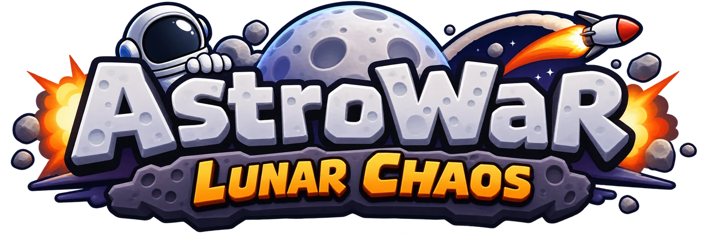
Dos escuadrones. Cuatro astronautas por bando. Un solo cráter.
Apunta, calcula la curva con la gravedad lunar y destruye el terreno bajo los pies de tu rival.
Misión en curso
Sin descargas ni instalaciones. Recomendado: Chrome, Edge o Firefox en PC con teclado y ratón.
La primera carga descarga el juego (unos segundos). Las siguientes veces abre más rápido.
Preparando el despegue…
0 %
No se pudo cargar el juego
📱 Este juego está pensado para computadora con teclado y ratón.
Transmisión entrante
Tráiler en producción
Muy pronto podrás ver aquí a los astronautas en acción.
Informe de misión
Una expedición lunar descubre un depósito de energía y dos escuadrones rivales, el Equipo Azul y el Equipo Naranja, se disputan su control. Solo un escuadrón puede quedar en pie.
Con -4 m/s² los proyectiles trazan curvas largas. Una línea punteada te muestra la trayectoria y el punto de impacto.
Las mesetas se rompen en fragmentos con cada explosión. El mapa cambia durante toda la partida.
Muévete, elige arma y dispara una vez. Luego tienes 3 segundos para ponerte a cubierto.
La IA navega con NavMesh, calcula tiros parabólicos y elige el arma con más daño esperado.
Dos jugadores en la misma computadora. Cada uno controla un equipo y se turnan el teclado y el ratón.
Tú comandas al Equipo Azul contra la IA.
Inventario
Cinco armas espaciales. Elige con las teclas 1 a 5 o con la rueda del ratón.
Rayo instantáneo en línea recta hasta 40 m. Impacta al primer objeto en su camino.
Proyectil con trayectoria curva por la gravedad. Explota al impactar.
Rebota en el terreno y explota tras una cuenta regresiva de 3 s.
Se arma en 2 s. Si un astronauta se acerca a 1,5 m, pita y explota.
Abre una singularidad por 4 s que atrae astronautas y rocas, y luego colapsa.
Manual de vuelo
Mover al astronauta (relativo a la cámara)
Saltar. Frente a una meseta, el salto se ajusta para trepar
Mantener para apuntar: más lejos = más potencia. Soltar para disparar
Mientras apuntas: subir o bajar la curva del disparo
Cancelar el disparo mientras apuntas
Elegir arma (también con la rueda del ratón)
Alternar vista general y tercera persona
Pausa (en pantalla completa, primero sale de ella)
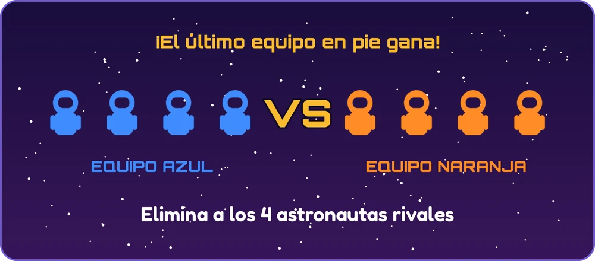
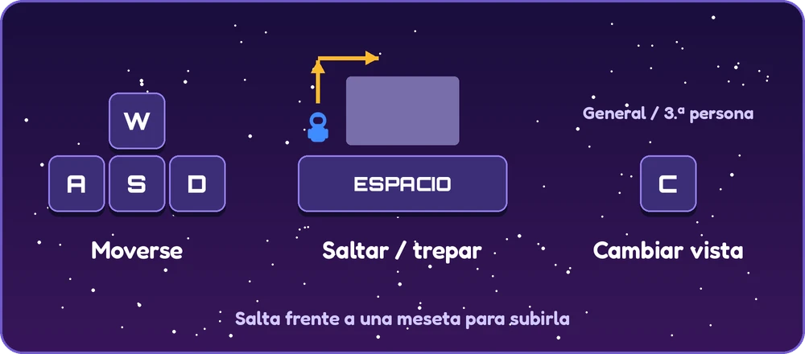
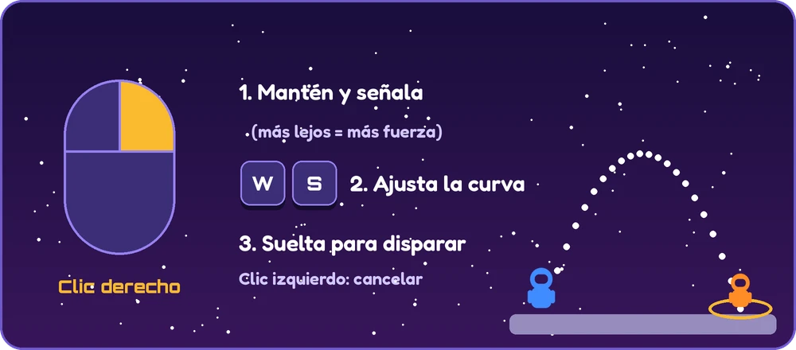
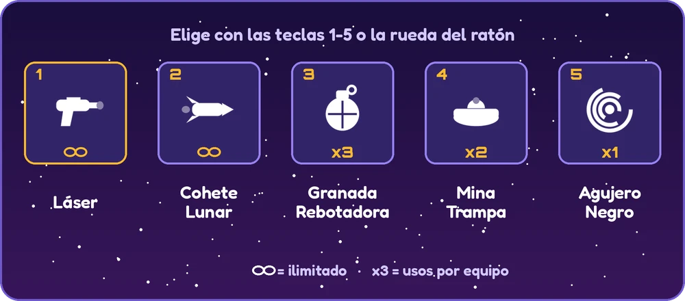
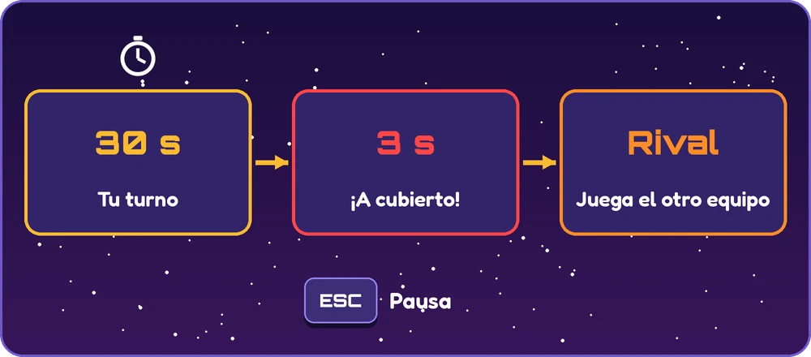
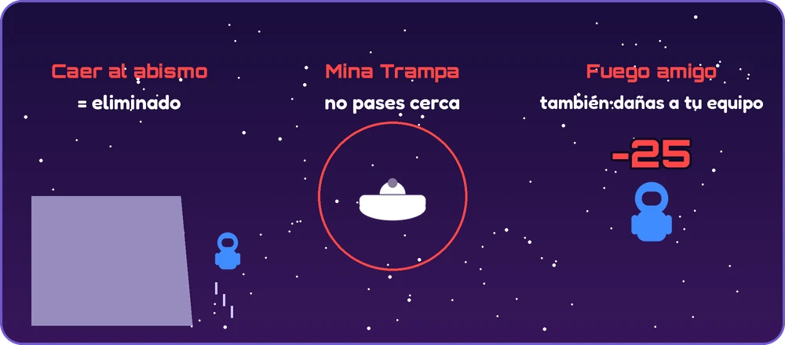
Tripulación
Entorno · UI/UX · WebGL · Página web
Personaje · Control · Armas
Reglas · IA · Audio · Tráiler
Hecho con Unity 6 · Universal Render Pipeline · AI Navigation · Modelos propios en Blender
Documentación
Todo sobre el diseño de AstroWar: reglas, mecánicas, armas, IA de la CPU, Triggers y Raycasts, interfaz, audio, organización del equipo y créditos de recursos.
El GDD final se publicará muy pronto.